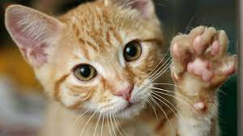
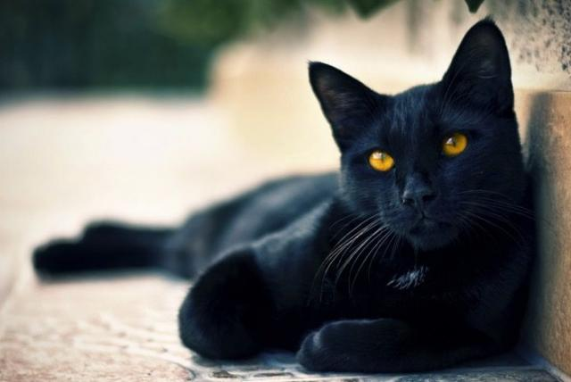
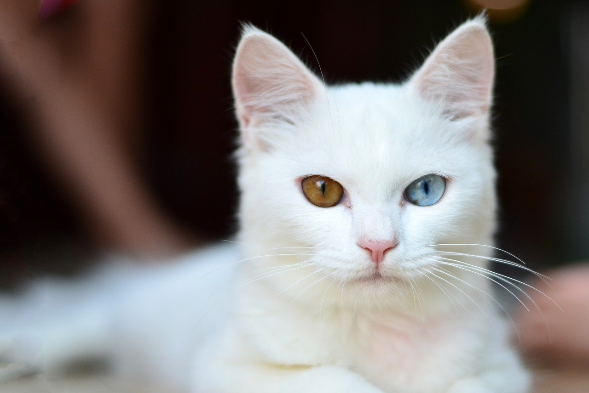

ONG Ayuda a un peludo
Ayuda a un peludo nace en respuesta a la gran cantidad de animales de compañía que son abandonados día a día en nuestro país. Funcionamos principalmente con donaciones y voluntarios y nuestro fin es poder buscar un hogar para estos amigos peludos.
Nuestros Integrantes
- Isabella Moreno - Lider de Grupo
- Patricia Carvajal - Desarrollador
- Diego Cortes - Desarrollador
- Bootstraps - Ayudante